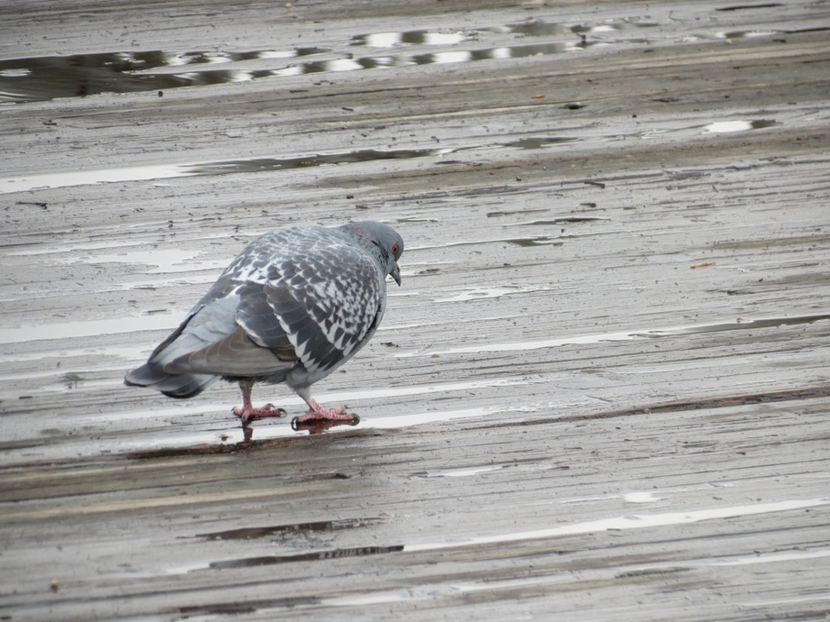
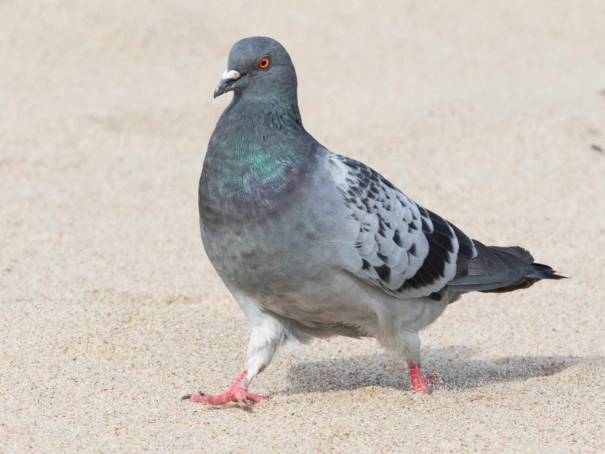

. ݁₊ ⊹ . ݁ Welcome!!! ݁ . ⊹ ₊ ݁.
Hello world!!!
My name is ███ but you can call me Kyenmie (she/her), it's lovely to meet you! I hope you enjoy your stay ⸜(｡˃ ᵕ ˂ )⸝♡
Why did I make this
After inducing a crippling career crisis after logging into LinkedIn for the first time in at least 6 months, Kyenmie found herself questioning if she really liked anything anymore and if there was any fulfilment left to be had in life (besides from seeing her bf on the weekends).
Wasn't going to a better school, getting into and graduating uni and getting a tech job doing frontend development always the end goal? If so, why did it feel like the journey to get here was a lot better than the destination? And why was the thought of moving to a better job, a better career so paralyzing?
Maybe it was just comfy to stay in the same position. Perhaps her situation would get better through the
power of
miracles and a change in management.
Maybe it was the anxiety alarm bells ringing which meant that doing anything about it at all, would be a
very bad idea.
Or maybe it was just laziness, onset by hours of endless doomscrolling.
Either way, Kyenmie wouldn't know the answers to her original questions - not at least for a while.
She thought back to her times in uni, during highschool, middle school, even primary school and before that too. There were so many things, dreams, ideas that she wanted to do - all given up for the prospect of a "big buck ez" job that ended up robbing her of an enjoyable life even outside of work. It was a miserable thought, to think about doing that until she was at least 65, or until she marries a rich person.
"So why not just do it now?"
"Huh? I'm too young to get married?"
"No, not that! Why not just do your ideas now? No one's stopping you."
And they were right, no one could stop her.
This website will be a playground for me, a place to ramble, show art, to recreate the joy I used to have when creating websites of my own. I hope it'll be fun and that you'll come along the ride too.
Some things I'll hope to do:
- Create and post art
- Create VTuber
- Stream art
- Try out 3D modelling
- Try out game dev
- Get gud at job, make big bucks
- Freelance artist/designer/programmer??
Site Updates
Tuesday @ 4:43:40am, 19/03/2024:
THE SITE IS BORN!! Created a cute placeholder frontpage, basic info and some backstory behind all
this :D